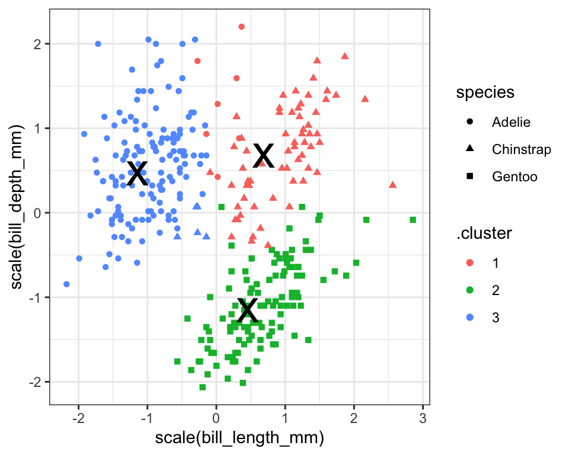
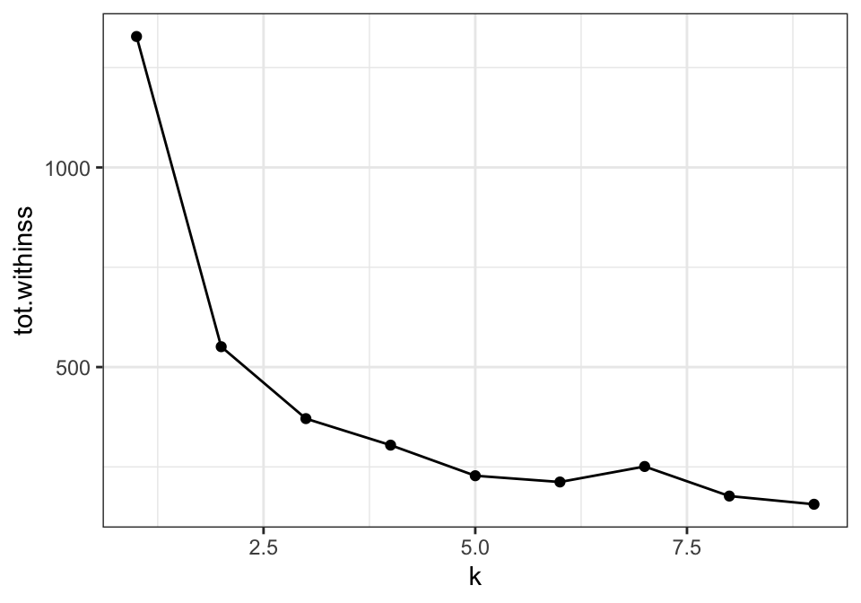
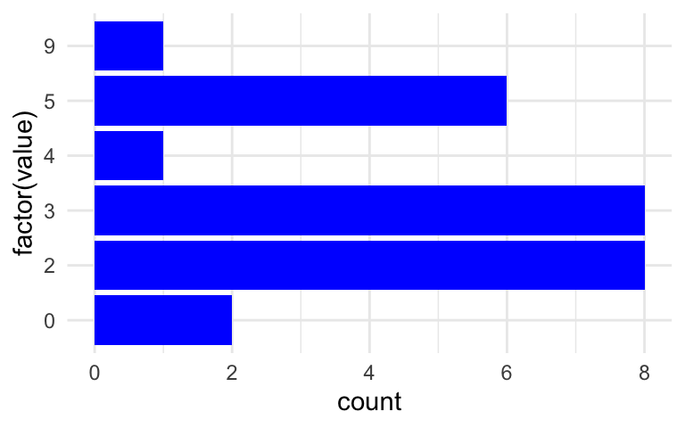
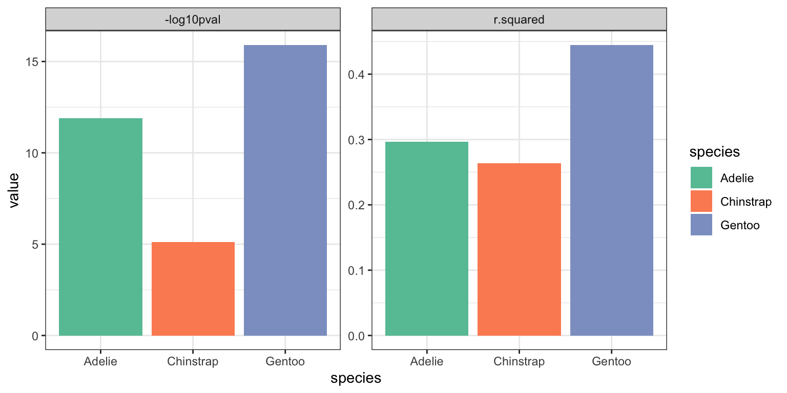
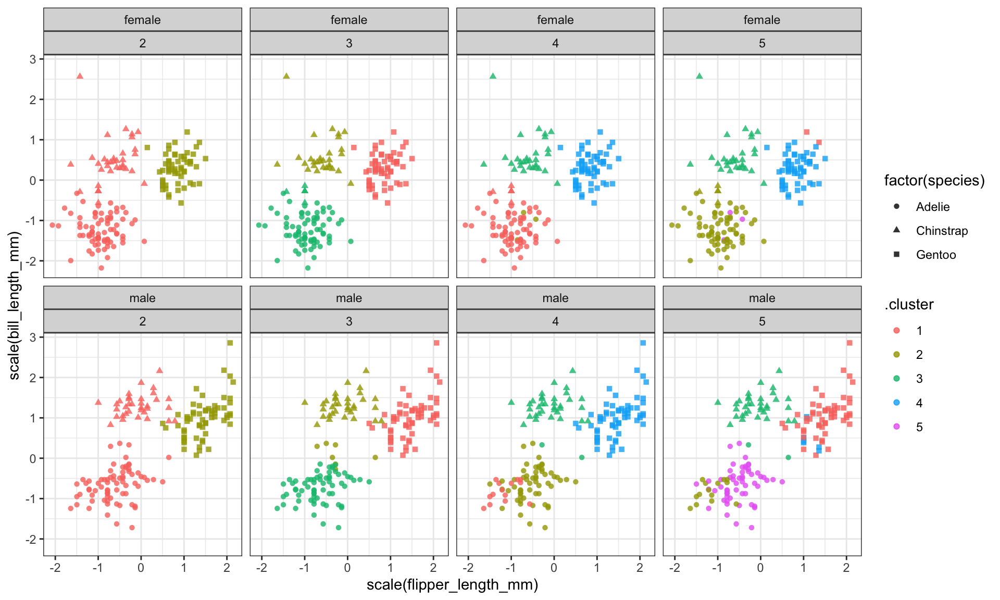

Chapter 9 Clustering
9.1 Indledning og læringsmålene
9.1.1 Læringsmålene
I skal være i stand til at
- Beskrive hvad k-means clustering går ud på
- Anvende
kmeansog output resultatet på en tidy måde - Iterate over forskellige antal clusters og vælge antallet som passer til de data
- Anvende funktionen
hclustfor at lave et simpel hierarchical clustering
9.1.2 Inledning til chapter
I clustering er der til formål at dele et datasæt op i forskellige grupper (clusters eller klynge på dansk) af observationer, der mest ligner hinanden. Det øger indsigten i datasættet ved at fk. bedre forstår strukturen. De spørgsmål som vi kan prøve at give svar på er bla.:
- Hvor mange forskellige clusters er repræsenteret i mit datasæt?
- Hvilke individuelle observationer tilhører hvilken cluster?
I dette kapitel ser vi hvordan vi kan implementere både k-means clustering og hierarchical clustering i R (indenfor den tidyverse ramme), og bruge dem til at tage beslutninger om de ovenstående spørgsmål.
9.1.3 Video ressourcer
- Video 1: K-means clustering
Link her hvis det ikke virker nedenunder: https://player.vimeo.com/video/553656150
- Video 2: augment, glanced og tidy med K-means
Link her hvis det ikke virker nedenunder: https://player.vimeo.com/video/553656139
- Video 3: Hvor mange clusters skal man vælge?
Link her hvis det ikke virker nedenunder: https://player.vimeo.com/video/553656129
9.2 K-means clustering
library(palmerpenguins)
library(tidyverse)
library(broom)I k-means er alle observationer eller datapunkter tilknyttet til den nærmeste cluster, efter deres nærhed til hinanden. Man specificere i forvejen antallet af clusters som data skal være delt op ind i. Derfor, skal der være nogle undersøgelses arbejde for at vælge den bedste antal clusters som passer til problemstillingen/ bedste repræsenterer de data.
Lad os tage udgangspunkt i datasættet penguins. Vi begynder med at få fjernet observationerne med NA i mindst én variable med funktionen drop_na og ved at specificere at year skal være en faktor (for at skelne den fra de andre numeriske kolonner):
data(penguins)
penguins <- penguins %>%
mutate(year=as.factor(year)) %>%
drop_na() Vi vide allerede i forvejen, at der er 3 species med i de data, som vi plotter her med forskellige farver.
penguins %>% ggplot(aes(x=bill_length_mm,y=body_mass_g,colour=species)) +
geom_point() +
theme_classic()
Vi vil gerne bruge k-means clustering på de numeriske variabler i de datasæt, og derefter kan det være nyttigt at sammenligne de clusters vi få med de tre species - hvor gode er de clusters til at skelne i mellem de forskellige species, eller fanger de noget andet struktur i de data (for eksempel kønnet eller øen, de bor)?
9.2.1 Hvordan fungere kmeans?
K-means er en iterativ process. Lad os forestille os at vi gerne vil have tre clusters i de data. Man starter med tre observationer ved tilfælde og kalde dem for de cluster middelværdierne eller “centroids.” Man tilknytter alle observationer til en af de tre clusters (efter de nærmeste af de tre centroids), og så beregner en ny middelværdi/centroid for at hver cluster. Man tilknytter observerationer til den nye cluster centroids og så gentager man processen flere gange.
Figure 9.1: source: https://towardsdatascience.com/k-means-a-complete-introduction-1702af9cd8c
Jeg spørger ikke efter detaljerne i metoden men der er mange videoer på Youtube som bedre foreklarer hvordan k-means fungerer, for eksempel: https://www.youtube.com/watch?v=4b5d3muPQmA
Bemærk, at der er noget tilfældighed indbygget i algoritmen. Det betyder, at hver gang man anvende k-means, få man en lidt anderledes resultat.
9.2.2 Run k-means i R
K-means fungerer kun på numeriske data, som vi kan vælge fra datasættet med select - man kan specificere where(is.numeric) indenfor select() for at slippe for at manuelt indtaste de relevante variable navne. Vi bruger også scale() på de data her. Det betyder, at alle variabler få den samme skala og det undgår, at der er nogle som få mere indflydelse end andre i de færdig resultater.
penguins_scaled <- penguins %>%
select(where(is.numeric)) %>%
scale()Man er også nødt til at fortælle i forvejen hvor mange clusters at opdele datasættet ind i, så lad os sige centers=3 indenfor funktionen kmeans her og beregner vores clusters:
kclust <- kmeans(penguins_scaled,centers = 3)
kclust## K-means clustering with 3 clusters of sizes 70, 119, 144
##
## Cluster means:
## bill_length_mm bill_depth_mm flipper_length_mm body_mass_g
## 1 0.8908006 0.7592465 -0.3044405 -0.4687119
## 2 0.6537742 -1.1010497 1.1607163 1.0995561
## 3 -0.9732998 0.5408171 -0.8112111 -0.6808149
##
## Clustering vector:
## [1] 3 3 3 3 3 3 3 3 3 3 3 3 1 3 1 3 3 3 3 3 3 3 3 3 3 3 3 3 3 3 3 3 3 3 3 3 3
## [38] 3 1 3 3 3 3 3 3 3 3 3 3 3 3 3 3 3 3 3 3 3 3 3 3 3 3 3 3 3 3 1 3 3 3 3 3 3
## [75] 3 3 3 3 3 3 3 3 3 3 3 3 3 3 3 3 3 3 3 3 3 3 3 3 3 3 3 3 3 1 3 1 3 3 3 3 3
## [112] 3 3 3 3 3 3 3 3 3 3 3 3 1 3 3 3 3 3 3 3 3 3 3 3 3 3 3 3 3 3 3 3 3 3 3 2 2
## [149] 2 2 2 2 2 2 2 2 2 2 2 2 2 2 2 2 2 2 2 2 2 2 2 2 2 2 2 2 2 2 2 2 2 2 2 2 2
## [186] 2 2 2 2 2 2 2 2 2 2 2 2 2 2 2 2 2 2 2 2 2 2 2 2 2 2 2 2 2 2 2 2 2 2 2 2 2
## [223] 2 2 2 2 2 2 2 2 2 2 2 2 2 2 2 2 2 2 2 2 2 2 2 2 2 2 2 2 2 2 2 2 2 2 2 2 2
## [260] 2 2 2 2 2 2 1 1 1 1 1 1 1 1 1 1 1 1 1 1 1 1 1 1 1 1 3 1 3 1 1 1 1 1 1 1 3
## [297] 1 3 1 1 1 1 1 1 1 1 1 1 1 1 1 1 1 1 1 1 1 1 1 3 1 1 1 1 1 1 1 1 1 1 1 1 1
##
## Within cluster sum of squares by cluster:
## [1] 78.96005 139.46837 152.44363
## (between_SS / total_SS = 72.1 %)
##
## Available components:
##
## [1] "cluster" "centers" "totss" "withinss" "tot.withinss"
## [6] "betweenss" "size" "iter" "ifault"Man få forskellige ting frem, for eksempel:
Cluster means- de svarer til de centroids markerede med x i den ovenstående figur - bemærk at her er de 5-dimensionel da vi brugt 5 variabler til at beregne resultatet.Clusteringvector - hvilke cluster er hver observation blevet tilknyttet til.Within cluster sum of squares- Jo mindre, jo bedre - hvor meget observationerne indenfor samme cluster ligner hinanden (den totale squared afstand af observationerne fra deres nærmeste centroid).
9.2.3 Tidy up k-means resultaterne med pakken broom
Fra pakken broom har vi beskæftiget os med glance som vi benyttede til at få enkel-linje baserede summary statistics fra flere modeller sammen i én dataramme, for at facilitete et plot/labels osv. Der er også to andre funktioner vi tager i bruge her. Her er en beskrivelse af de tre.
| Funktion | Beskrivelse |
|---|---|
glance |
single line summary |
augment |
Connect information from the model to the original dataset |
tidy |
multi-line summary |
For at lave et plot af de clusters kan det være nyttigt at benytte augment. Her kan man se, at vi har fået en kolon der hedder .cluster med i den oprindelige dataramme (jeg flyttet kolonen til første plads i følgende kode så man kunne se den i de output af kursusnotater).
kc1 <- augment(kclust, penguins) #clustering = første plads, data = anden plads
kc1 %>% select(.cluster,all_of(names(penguins)))## # A tibble: 333 × 9
## .cluster species island bill_length_mm bill_depth_mm flipper_length_mm
## <fct> <fct> <fct> <dbl> <dbl> <int>
## 1 3 Adelie Torgersen 39.1 18.7 181
## 2 3 Adelie Torgersen 39.5 17.4 186
## 3 3 Adelie Torgersen 40.3 18 195
## 4 3 Adelie Torgersen 36.7 19.3 193
## 5 3 Adelie Torgersen 39.3 20.6 190
## 6 3 Adelie Torgersen 38.9 17.8 181
## 7 3 Adelie Torgersen 39.2 19.6 195
## 8 3 Adelie Torgersen 41.1 17.6 182
## 9 3 Adelie Torgersen 38.6 21.2 191
## 10 3 Adelie Torgersen 34.6 21.1 198
## # … with 323 more rows, and 3 more variables: body_mass_g <int>, sex <fct>,
## # year <fct>Nu lad os benytte vores datasæt som vi har fået med augment til at lave et plot. Her giver jeg en farve efter .cluster og shape efter species så at vi kan sammenligne vores beregnet clusters med de tre forskellige species. Bemæk her, at jeg kun har to variabler i plottet, men der er faktisk fire variabler som blev brugt til at lave de clusters i med funktionen kmeans. En anden måde er at plotte de først to principal components i stedet for to af de fire variabler - det beskæftige vi os med næste gang.
ggplot(kc1, aes(x = scale(bill_length_mm),
y = scale(bill_depth_mm))) +
geom_point(aes(color = .cluster, shape = species)) + theme_minimal()
Vi kan også fk. tælle op hvor mange af tre species vi få i hver af vores tre clusters, hvor vi kan se, at Adelie og Chinstrap er blevet mere blandet blandt to af de tre clusters end Gentoo.
kc1 %>%
count(.cluster, species)## # A tibble: 5 × 3
## .cluster species n
## <fct> <fct> <int>
## 1 1 Adelie 7
## 2 1 Chinstrap 63
## 3 2 Gentoo 119
## 4 3 Adelie 139
## 5 3 Chinstrap 5Lad os også kigge på resultatet af tidy. Her har vi fået en pæn dataramme med middelværdierne (centroids) af de tre clusters over de fire variabler som blev brugt i beregningerne.
kclust_tidy <- tidy(kclust)
kclust_tidy## # A tibble: 3 × 7
## bill_length_mm bill_depth_mm flipper_length_mm body_mass_g size withinss
## <dbl> <dbl> <dbl> <dbl> <int> <dbl>
## 1 0.891 0.759 -0.304 -0.469 70 79.0
## 2 0.654 -1.10 1.16 1.10 119 139.
## 3 -0.973 0.541 -0.811 -0.681 144 152.
## # … with 1 more variable: cluster <fct>Lad os benytte kclust_tidy som et datasæt i vores ovenstående plot indenfor en anden geom_point() til at tilføje en x form i de centre af de tre clusters (bemærk jeg har brugt color og shape som lokale aethetics i den første geom_point() her, der de ikke eksistere som kolonner i kclust_tidy):
ggplot(kc1, aes(x = scale(bill_length_mm),
y = scale(bill_depth_mm))) +
geom_point(aes(color = .cluster, shape = species)) +
geom_point(data = kclust_tidy,
size = 10, shape = "x", show.legend = FALSE) +
theme_bw()
Vi kan se at vores clusters fanger ikke de samme gruppe som species perfekt - der er forskelligheder. Det kan være at vi også har fanget nogle oplysninger om fk. øen de kommer fra eller kønnet af pingvinerne.
9.3 Hvor mange clusters skal der være?
Vi gættede på 3 clusters i ovenstående analyse (da vi havde oplysninger om de species i forvejen) men det kunne være, at et andet antal clusters passer bedre med de data. Vi kan anvende vores statistikker over de forskellige antal cluster til at tage en beslutning om, hvor mange clusters vi gerne vil beholde i vores færdig clustering resultat. Det er vigtigt at kan finde frem til en hensigtsmæssigt antal clusters - for mange clusters kan resultatere i over-fitting, hvor vi har for mange til at fortolke eller giver mening, og for få kan betyde at vi mangler indsigter ind i strukturen eller trends i de data.
9.3.1 Få statistikker for antal clusters fra 1 til 9
I nedenstående iterater vi over vectoren 1:9, som vi angive i kmeans for at fortæl hvor mange clusters vi gerne vil beregne. For hver af de integar 1 til 9, benytter vi således kmeans med hjælp af funktionen my_func (bemærk at vores input data .x er antallet af clusters men de datasæt er den samme hver gang). Dernæst benytte vi tidy, glance og augment på vores resultaterne fra kmeans:
my_func <- ~kmeans(penguins %>% select(where(is.numeric)) %>% scale(),
centers = .x)
kclusts <-
tibble(k = 1:9) %>%
mutate( kclust = map(k, my_func),
tidied = map(kclust, tidy),
glanced = map(kclust, glance),
augmented = map(kclust, augment, penguins)
)Husk at for at få frem resultaterne i de forskellige former fra tidy,glance og augment er vi nødt til at anvende unnest:
kclusts_tidy <- kclusts %>% unnest(cols = c(tidied))
kclusts_augment <- kclusts %>% unnest(cols = c(augmented))
kclusts_glance <- kclusts %>% unnest(cols = c(glanced))9.3.2 Manuelt beslutning med elbow plot.
Vi bruger tot.withinness fra vores glance output. Det måler hvor meget observationerne indenfor samme cluster ligner hinanden og er den totale afstand af observationerne fra deres nærmeste centroid. Jo flere clusters, jo mindre statistikken, men vi kan se, at efter 2-3 clusters, er der ikke meget gevinst med at bruge flere clusters. Derfor vælger man enten 2-3. Der er ofte kaldes for en ‘elbow’ plot - man vælge de tal på den ‘elbow,’ hvor der ikke er meget gevinst med at have flere clusters i de data.
kclusts_glance %>%
ggplot(aes(x = k, y = tot.withinss)) +
geom_line() +
geom_point() +
theme_bw()
9.3.3 Automatistke beslutning med pakken NbClust
Hvis man synes at de er svært at vælge et bestemt cluster tal fra de elbow plot, kan man også prøve noget mere automatisk. For eksempel pakken NbClust lave 30 forskellige clustering algoritme af de data fra antal clusters = 2 til antal cluster = 9 og for hver af de 30 tage en beslutning om de bedste antal clusters. Man kan således se hvilket antal clusters blev valgt af de mest algoritmer.
library(NbClust)
cluster_30_indexes <- NbClust(data = penguins %>% select(where(is.numeric)) %>% scale,
distance = "euclidean",
min.nc = 2,
max.nc = 9,
method = "complete")Man kan se her, at enten 2 eller 3 er optimelt, som passer sammen med den elbow plot methode.
as_tibble(cluster_30_indexes$Best.nc[1,]) %>%
ggplot(aes(x=factor(value))) +
geom_bar(stat="count",fill="blue") +
coord_flip() +
theme_minimal()
9.3.4 Plot de forskellige antal clusters
Vi kan også visualisere hvordan de forskellige antal clusters ser ud. Her kan vi bruge vores resultater fra funktionen augment til hver af de 9 clusterings. Her har vi har plottet flipper_length_mm vs bill_length_mm.
kclusts_augment %>%
ggplot(aes(x = flipper_length_mm, y = bill_length_mm,colour=.cluster)) +
geom_point(aes(shape=factor(species)), alpha = 0.8) +
facet_wrap(~ k) + theme_bw()
Her introducerer jeg sex som en ekstra variable i de plot. Husk at variablen sex ikke blev brugt i k-means, men det kan være, at der er nogle aspekter af de fire variabler, som kan fortælle os nogle om kønnet af pingvingerne. For at spare plads, har jeg kun plottet antal clusters fra 2 til 5.
kclusts_augment %>% filter(k %in% 2:5) %>%
ggplot(aes(x = scale(flipper_length_mm), y = scale(bill_length_mm),colour=.cluster)) +
geom_point(aes(shape=factor(species)), alpha = 0.8) +
facet_wrap(~ sex+k,nrow=2) + theme_bw()
9.4 Hierarchical clustering
K-means er en meget populær måde at lave clusters i de data på, men der er mange andre metoder til at lave clusters. Jeg nævne kort hierarchical clustering. Derfor vil jeg også navne her hierarchical clustering. Vi skifter over til mtcars, og ligesom i kmeans skal vi bruge scale på de numeriske kolonner i de data.
mtcars_scaled <- mtcars %>% select(where(is.numeric)) %>% scaleI modsætning til k-means, for at lave hierarchical clustering skal man første beregne afstanden mellem alle de observationer i de data. De gøre man med funktionen dist (som bruger den Euclidean distance som default):
d <- dist(mtcars_scaled)For at lave en hierarchical clustering anvender man funktionen hclust. Metoden complete er default men man kan afprøve de andre methoder (der er ikke en fast regel over for, hvilken man skal bruge).
mtcars_hc <- hclust(d, method = "complete" )
# Metoder: "average", "single", "complete", "ward.D"I følgende arbejder vi lidt med mtcars_hc til at få nogle clusters frem, og til at lave et plot.
9.4.1 Vælge ønkset antal clusters
Funktionen cutree anvendes til at få clusters fra de data. For eksempel, hvis man gerne vil have 4 clusters, bruger man k = 4. Jeg specificerer order_clusters_as_data = FALSE for at få de clusters i de rækkefølger, som passer til plottet (dendrogram) vi lave (man skal have ovenstående pakker installeret for at få den til at fungere).
library(dendextend)
clusters <- cutree(mtcars_hc, k = 4, order_clusters_as_data = FALSE)
tibble("cluster"=clusters) %>% group_by(cluster) %>% summarise(n())FALSE # A tibble: 4 × 2
FALSE cluster `n()`
FALSE <int> <int>
FALSE 1 1 7
FALSE 2 2 8
FALSE 3 3 12
FALSE 4 4 59.4.2 Lav et pænt plot af dendrogram med ggplot2
Første vi anvende dendro_data til at udtrække de dendrogram oplysninger fra de hclust resultater.
library(ggdendro)
dend_data <- dendro_data(mtcars_hc %>% as.dendrogram, type = "rectangle")Vi tilføjer vores clusters som vi beregnede ovenpå (det er derfor vi sikrede rækkefølgen af de clusters):
dend_data$labels <- dend_data$labels %>%
mutate(cluster = clusters)Vi benytter dend_data$segments og dend_data$labels til at lave et informativ plot af de data i ggplot2.
ggplot(dend_data$segments) +
geom_segment(aes(x = x, y = y, xend = xend, yend = yend)) +
coord_flip() +
geom_text(data = dend_data$labels,
aes(x, y, label = label,col=factor(cluster)),
hjust=1,size=3) +
ylim(-3, 10) +
theme_dendro()
9.4.3 Ekstra: afprøve andre metoder
Her giver jeg nogle valgfri ekstra kode til at afprøve de fire metoder - “average,” “single,” “complete” og “ward.D.”
# samme ggplot kommando som ovenpå lavet til en funktion
den_plot <- ~ggplot(.x$segments) +
geom_segment(aes(x = x, y = y, xend = xend, yend = yend)) +
coord_flip() +
geom_text(data = .x$labels,
aes(x, y, label = label),
hjust=1,size=2) +
ylim(-4, 10) + theme_dendro()Vi iterate over de fire metoder og lave samme process som ovenpå med map. Derefter kan man lave et plot fk. med grid.arrange:
# fire metoder:
m <- c( "average", "single", "complete", "ward.D")
hc_results <-
tibble(method = m) %>%
mutate( kclust = map(method, ~hclust(d, method = .x)),
dendrogram = map(kclust,as.dendrogram),
den_dat = map(dendrogram,~dendro_data(.x,type="rectangle")),
plot = map(den_dat,den_plot))
library(gridExtra)
grid.arrange(grobs = hc_results %>% pull(plot),ncol=2)
9.5 Problemstillinger
0) Quiz - Clustering
1) Funktionen kmeans. I ovenstående anvendt vi mtcars i hierarchical clustering, men lad os se, hvordan det ser ud med k-means. Man kan tilpasse den ovenstående kode for det penguins datasæt:
a) Benyt
kmeanstil at finde 2 clusters i de data- husk at vælge kun de numeriske kolonner og scale de data i forvejen
- gem din clustering som
my_clusters. - hvor mange observationer er der i hver af de to clusters?
b) Anvend
augmenttil at forbinde de datasæt til de clusters framy_clusters(husk at din clustering resultat skrives i første plads i funktionen og så de data i anden plads).c) Brug din augmented datasæt til at lave et scatter plot mellem to af de numeriske variabler i de data og give dem farver efter de clusters du har beregnet.
- hvis du har forbundet det oprindeligt data (der ikke var scaled) i
augment, husk at scale de data i plottet. - prøve også to andre numeriske variabler
- hvis du har forbundet det oprindeligt data (der ikke var scaled) i
d) Anvend
tidytil at finde ud af de middelværdier/centroids af hver af de 2 clusters- tilpas min kode fra notaterne til at tilføj dem til plottet som ‘x.’
2) k-means for forskellige k
Åbn LungCapData fra nedenstående link
LungCapData <- read.csv("https://www.dropbox.com/s/ke27fs5d37ks1hm/LungCapData.csv?dl=1")
LungCapData <- as_tibble(LungCapData)
head(LungCapData) #se variabler navne## # A tibble: 6 × 6
## LungCap Age Height Smoke Gender Caesarean
## <dbl> <int> <dbl> <chr> <chr> <chr>
## 1 6.48 6 62.1 no male no
## 2 10.1 18 74.7 yes female no
## 3 9.55 16 69.7 no female yes
## 4 11.1 14 71 no male no
## 5 4.8 5 56.9 no male no
## 6 6.22 11 58.7 no female noa) Anvend
kmeanspåLungCapData- Vælg de numeriske variabler og scale
- Angiv
centers = 3 - Benytte
augmenttil at forbinde resultaterne tilLungCapDataog gemme resultatet.
b) Lav et scatter plot mellem
LungCapogAgeog giv farver efter din beregnet clusters.c) Lav et scatter plot mellem
LungCapogHeightog giv farver efterSmoke.- Angiv en forskellige form efter
Smoke
- Angiv en forskellige form efter
d) Man kan også bruge
my_clusters_augmenttil at beregne middelværdier medgroup_byogsummarise.- group efter
.clusterogsmokeog beregner den gennemsnitligeLungCapogHeightfor hver kombination. - Angiv datarammen af resultaterne middelværdier indenfor plottet med
geom_pointfor at få dem som “X” punkter i plottet.
- group efter
Lad os undersøge om, 3 var en gode antal clusters til at beregne i de data.
- d) Tilpas koden nedenstående (baserende på den jeg præsenterede i notaterne) til at beregne 9 clusterings for det
LungCapDatadatasæt.
my_func <- ~kmeans(??? %>% select(???) %>% ???,
centers = ???)
kclusts <-
tibble(k = ???) %>%
mutate( kclust = map(k, my_func),
tidied = ???,
glanced = ???,
augmented = ???
)
kclusts_tidy <- kclusts %>% unnest(???)
kclusts_augment <- ???
kclusts_glance <- ???e) Lav et “elbow”-plot fra din beregnet clusterings
- Anvend
kclusts_glanceog plottot.withinsspå y-aksen.
- Anvend
e) Afpøv automatiske method (tilpas min kode fra kursus notaterne)
f) Visualiser de forskellige antal clusters i et plot
- Tilpas min kode og benytter
kclusts_augment - Husk at bruge
facet_wraptil at adskille efter k.
- Tilpas min kode og benytter
3) Hierarchical clustering øvelse
Vi laver en analyse af det msleep datasæt. Jeg har lavet oprydningen og scaling for jer:
data(msleep)
msleep_clean <- msleep %>% select(name,where(is.numeric)) %>% drop_na()
msleep_scaled <- msleep_clean %>% select(-name) %>% scale
row.names(msleep_scaled) <- msleep_clean$nameTilpas min kode fra kursusnotaterne til at lave følgende skridt:
a) Benyt funktioner
distog såhclustpå datasættetmsleep_scaled.b) Benyt
cuttreefor at finde 5 clusters i de data, og kalde det forclusters. Husk at anvendeorder_clusters_as_data = FALSEså at vi har den korrekt rækkefølge for et plot (man skal indlæse pakkendendextend)c) Benyt
dendro_datatil at udtrække de dendrogram fra resultaterne- Tilføj
clusterstildend_data$labels
- Tilføj
d) Lav et plot af de dendrogram
- Tilpas koden for
mtcarseksempel for nuværende data
- Tilpas koden for